About NOS-TLPlot
NOS-TLPlot is an open-source Python tool for visualizing Newcastle–Ottawa Scale (NOS) risk-of-bias assessments. It converts NOS star ratings into publication-ready traffic-light plots and 12 specialized visualizations, enabling reviewers and readers to interpret study-level risk-of-bias results clearly and reproducibly.
Scope-Limited & Focused
Designed exclusively for NOS evaluations of non-randomised studies in systematic reviews and meta-analyses.
12 Visualization Types
Traffic-light plots, radar charts, heatmaps, dot profiles, donut charts, lollipop charts, and more.
Publication-Ready Output
Export figures in .png, .pdf, .svg, .eps formats with multiple themes (traffic-light and grayscale).
Multiple Interfaces
Streamlit web app (local host deploy + Online) for interactive use and command-line interface for batch processing and automation.
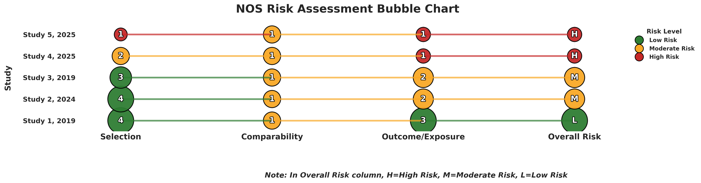
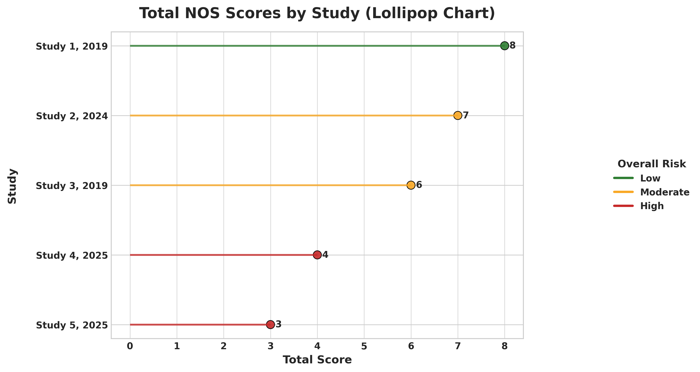
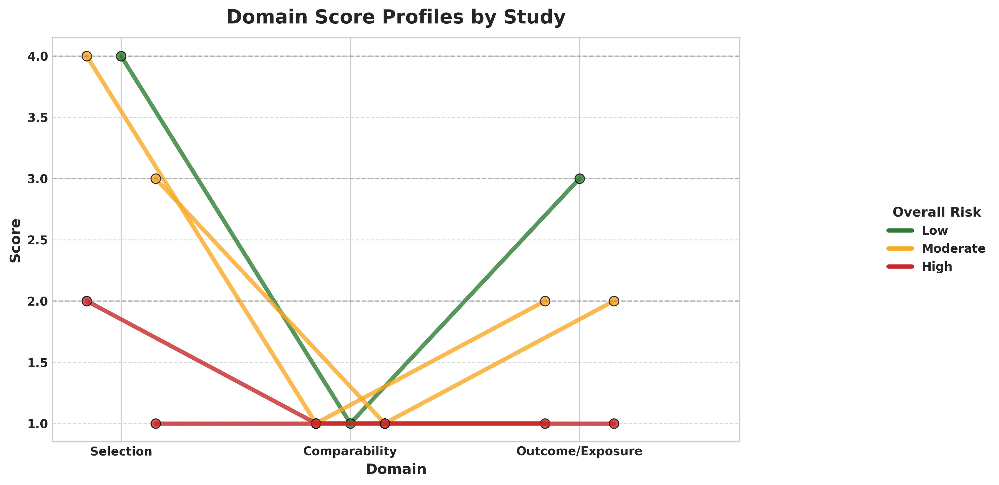
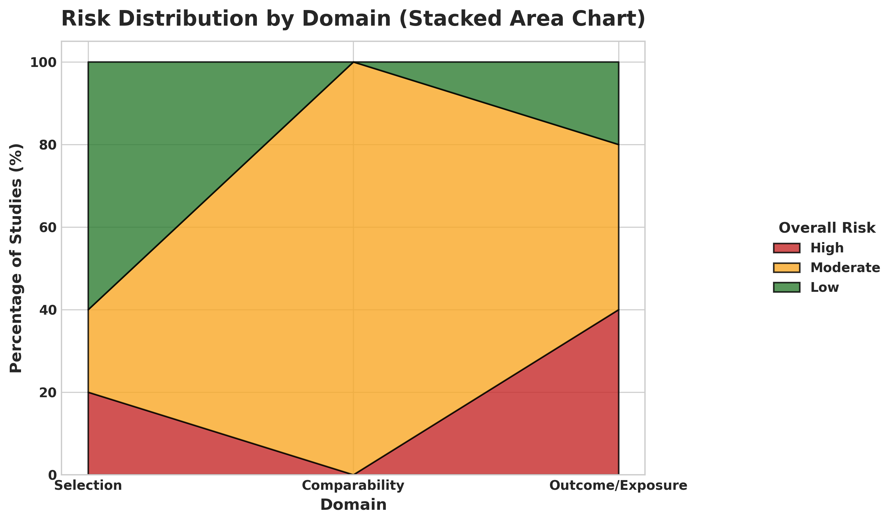
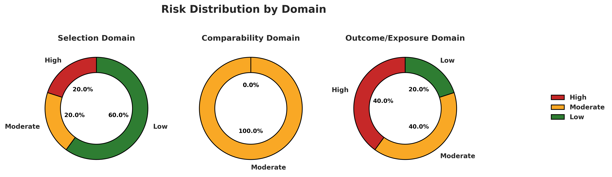
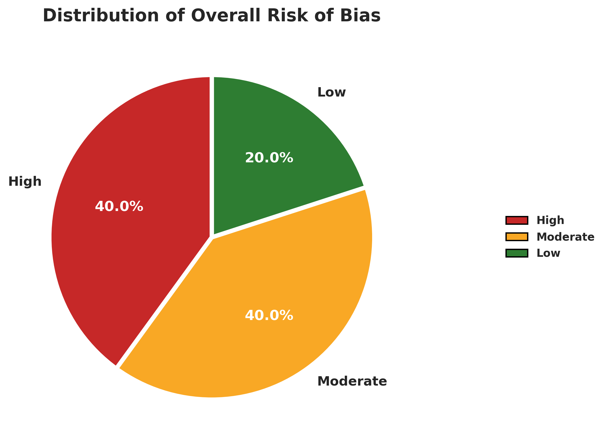
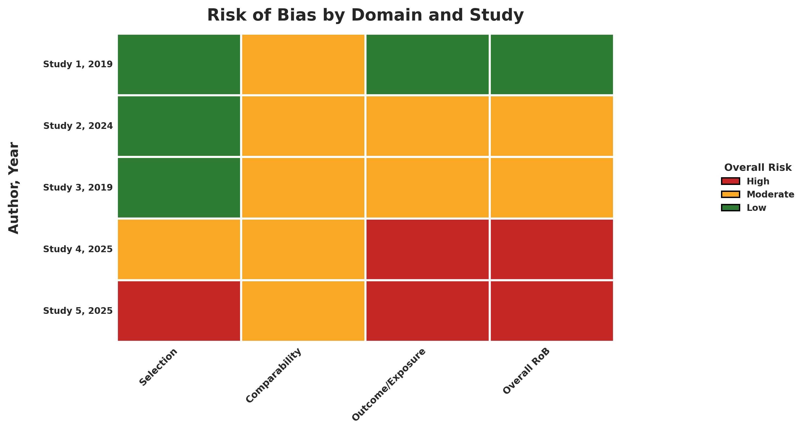
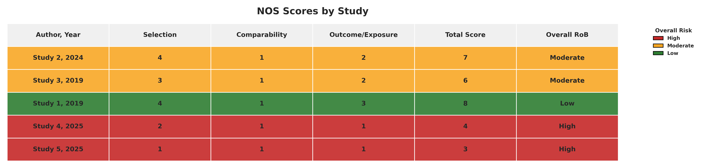
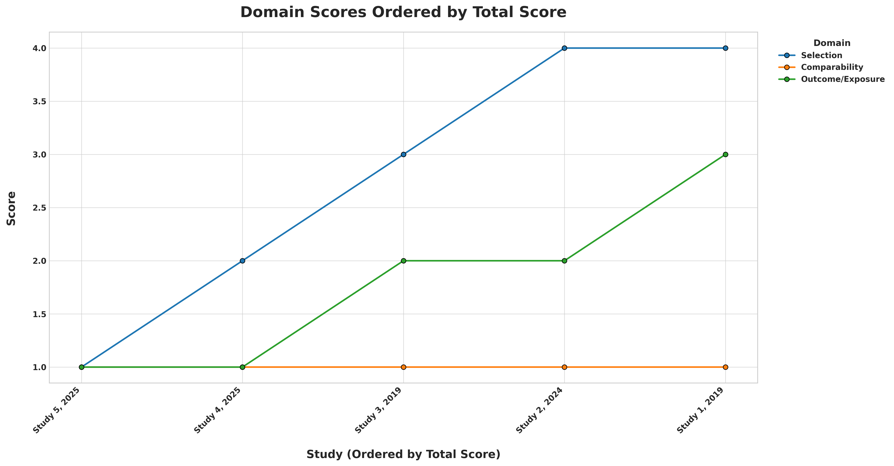
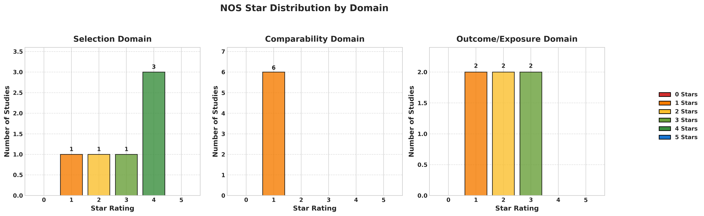
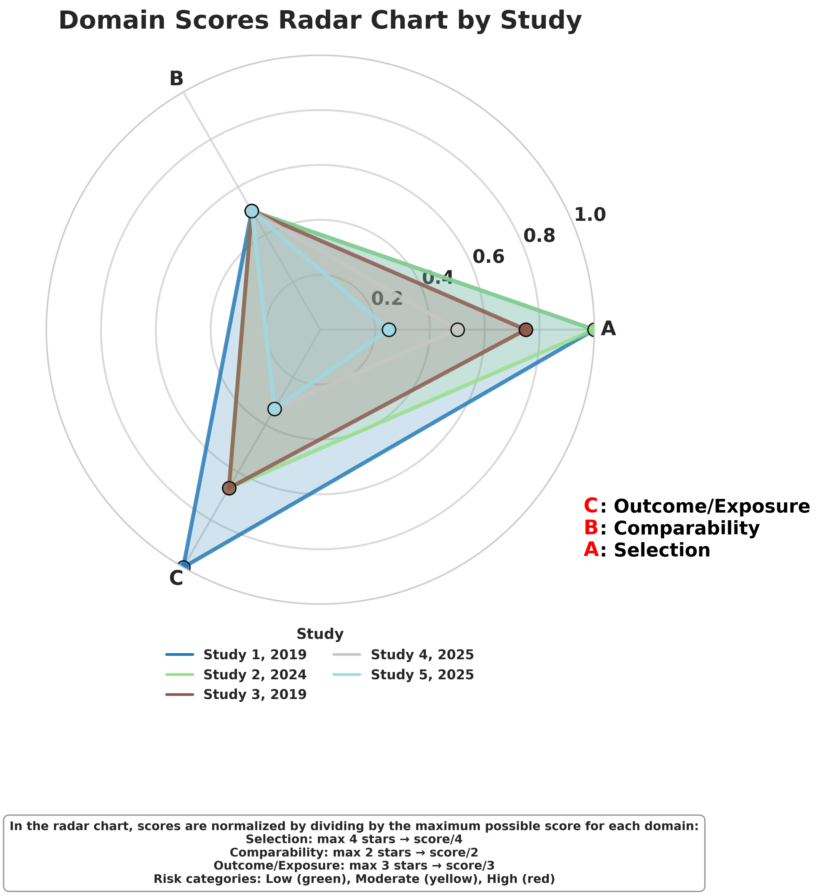
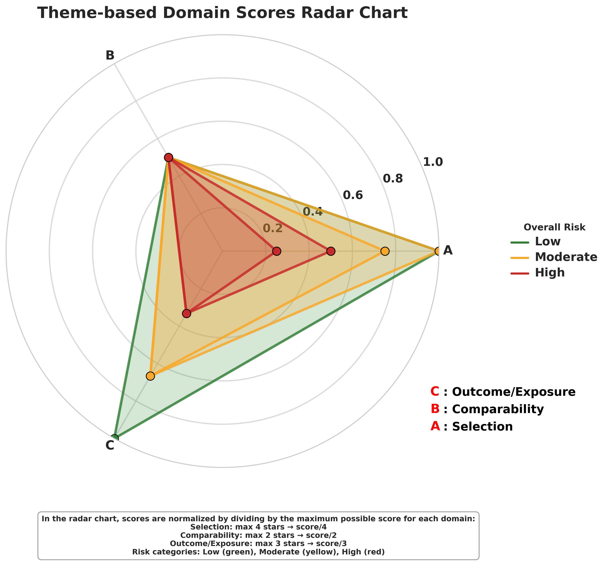
Visualization Types
Note: Radar plots (both thematic and domain-based) and dot profile plot will not be generated if the number of studies exceeds 5.
Input Data Format & Template
Note:
The tool is case-sensitive. Accordingly, the exact use of uppercase and lowercase characters, as presented in the NOS-TLPlot template, must be strictly adhered to.
NOS Template
Your NOS data file should strictly follow this structure:
| Author, Year | Representativeness | Non-exposed Selection | Exposure Ascertainment | Outcome Absent at Start | Comparability (Age/Gender) | Comparability (Other) | Outcome Assessment | Follow-up Length | Follow-up Adequacy | Total Score | Overall RoB |
|---|---|---|---|---|---|---|---|---|---|---|---|
| Study 1, 2019 | 1 | 1 | 1 | 1 | 1 | 0 | 1 | 1 | 1 | 8 | Low |
| Study 2, 2024 | 1 | 1 | 1 | 1 | 1 | 0 | 1 | 1 | 0 | 7 | Moderate |
| Total Stars | Interpretation | Risk Category |
|---|---|---|
| 7–9 | High-quality study | Low RoB |
| 4–6 | Moderate-quality study | Moderate RoB |
| 0–3 | Poor-quality study | High RoB |
Methods Section Text
For including NOS-TLPlot in your systematic review methods section:
"Risk of bias for included non-randomized studies was assessed using the Newcastle–Ottawa Scale (NOS). Visualization and synthesis of domain-level NOS scores were performed using NOS-TLPlot (v2.0.3), an open-source Python-based tool that generates traffic-light plots and other visual formats for NOS-based risk-of-bias representation (Sahu, 2026; DOI: 10.5334/jors.635)."
Support & Contact
Have questions or need assistance with NOS-TLPlot? This tool is designed for reproducible research, and we are here to help you integrate it into your systematic review workflow.
You can open a GitHub Issue or send an email directly for guidance, troubleshooting, or feature requests.
Citation
If you use NOS-TLPlot in your research, please cite the Software article:
Sahu, V. (2026). NOS-TLPlot: A Specialized Python Tool for Visualizing Newcastle–Ottawa Scale Risk-of-Bias Assessments. Journal of Open Research Software, 14(1), 7. https://doi.org/10.5334/jors.635
Note: The software's code is also available as a citable, archivable artifact on Zenodo: https://doi.org/10.5281/zenodo.17065214